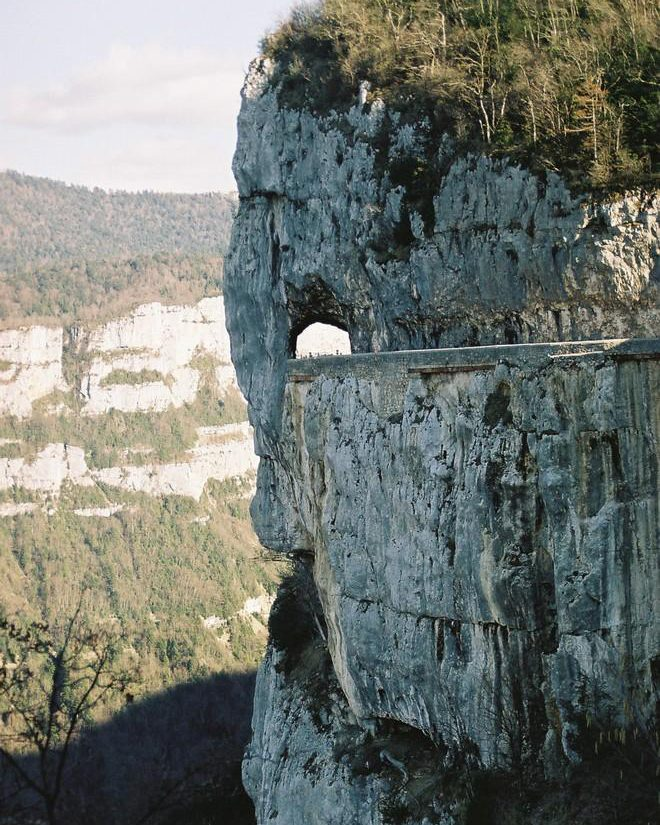

Op ongeveer 1u15 van Les Cabritas toont de Drôme-kant van het Vercors-massief een heel ander landschap: steile rotswanden, historische wegen uitgehouwen in de rots en plekken vol herinnering, vooral rond Vassieux-en-Vercors.

De Grands Goulets, een weg uitgehouwen in de rotswand
De oude weg van de Grands Goulets werd in 1851 geopend na acht jaar werk, voor die tijd een opmerkelijk huzarenstuk. Het schilderachtige gehucht Les Barraques werd gebouwd om de arbeiders tijdens de bouw te huisvesten. Sinds in 2008 een nieuwe tunnel openging, is de 'historische' weg gesloten voor verkeer, maar hij blijft op sommige stukken indrukwekkend om te voet te verkennen, diep in een dramatische kloof.
Vassieux-en-Vercors, een plek vol herinnering
Het Mémorial du Vercors, bij de Col de la Chau, kijkt vanaf de rotswanden uit over de vlakte van Vassieux, met uitzicht over het hele massief en precies de plekken van de verzetsgevechten van 1944. Het departementale verzetsmuseum, opgericht door oud-verzetsstrijder Joseph La Picirella, maakt het bezoek compleet en helpt bezoekers de tragische gebeurtenissen te begrijpen die het dorp tijdens de Tweede Wereldoorlog troffen.
Goed om te weten voor uw bezoek
De bochtige bergweg vraagt om voorzichtig rijden; neem extra tijd als u snel wagenziek wordt. Het klimaat is hier koeler dan beneden in het dal, ook in de zomer, dus neem een dunne trui mee. Reken op een volle dag om een wandeling, een bezoek aan de Grands Goulets en een stop bij het museum te combineren.
Praktische informatie vanuit Les Cabritas
- Afstand vanaf Flaviac: ongeveer 1u15 tot 1u30 rijden
- Beste periode: mei tot september
- Ideaal voor: wandelen, geschiedenis, weidse ruimtes
Zin om de Vercors van de Drôme en de Grands Goulets te ontdekken vanuit uw vakantiehuis in de Ardèche?
Les Cabritas verwelkomt u in Flaviac, in het hart van de Ardèche, voor een comfortabel verblijf met privézwembad, vlak bij de mooiste plekken van de streek.
Beschikbaarheid bekijken